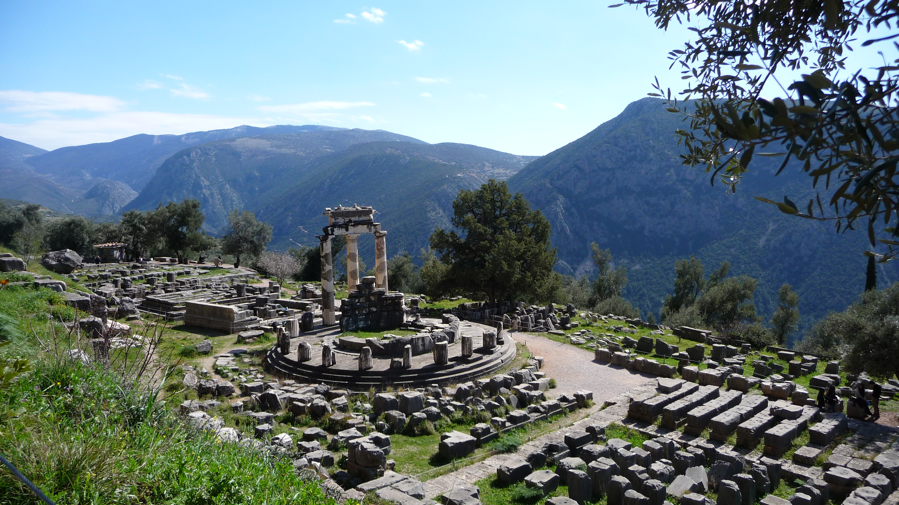

1. Pyramids of Giza
People to this day still wonder how these architectural anomalies were built in
an era where technology was not as advanced as it is now. There are so many wonders
in the heart of Egypt all for you to explore. The Tombs of pharohs, the collection of
pyramids built to honour them, and being able to experience a desert environment awaits
you at the Pyramids of Giza.
2. Machu Picchu

This ancient Incan village is a great example of past city development, but Machu Picchu
is specifically interesting because of its beautiful location on top of a mountain. With
many wonderful sights to see, you can imagine the life of the Incan villager and put yourself
in their shoes. There are several temples nearby and stone carvings that can be visited.
Visiting Machu Picchu will give you a medieval atmosphere for you to experience.
3. Sukhothai

Thailand's Sukhothai is a kingdom like no other. With a deep historical past of many rulers,
Sukhothai has seen many changes. This place will leave you wondering about how it has developed
to be the way it is. Its a beautiful kingdom that isnt similar to the standard western kingdoms that
we are more exposed to. Sukhothai will leave you in awe for other cultures and allow you to experience
years of cultural development that is nothing like your own.
4. Volubilis

This excavated city in Morocco has seen a lot in its history. The kingdom has had a deep envolvement
with Rome and many battles that it had faced, which can be seen when walking around its ruins.
There is a great learning experience visiting Volubilis. From its beautiful mosiacs to its statues
and amazing architecture. It leaves you wondering about how the people of Volubilis lived their
daily lives in this ancient city.
5. Angkor Wat

This historical Bhuddist temple will give you a whole new view on architecture as a whole. With its
amazing intricate details and beautiful surrounding landscape, your breath will be taken away.
As Angkor Wat served as a palace in its history, it had been changed to be
dedicated to a Hindu temple of worship. With is beautiful inscriptions on the walls and large
trees growing on the temple itself, you'll be in a whole new world while walking through temple
grounds.
6. Petra

Petra's stunning stone monuments will leave you astonished at the amazing architecture and craftsmanship.
The way these kingdoms were built into walls of mountains giving it a cave atmosphere, is really
enchanting to experience. There are plenty of chances to analyse stone carvings and wander about the narrow
tall passageways through the desert kingdom. Its interesting to wonder about how these people survived in
barren desert landscapes and visiting Petra will give you a chance to visualise it.
7. Delphi - Mount Parnassus

Delphi, located on Mount Parnassus, is a historical landmarker for Greek mythology and is a very important
place to visit when in Greece. It was believed that Mount Parnassus was sacred to Dionysus and the Dionysian
mysteries. It was also believed to be sacred to Apollo and the Corycian nymphs. While its name translates to
"the mountain of the house of the god" walking around there really makes you feel like you are on sacred
lands.
8. The Colosseum
The Colosseum is the most popular location for tourists to visit when in Rome and it is popular for a very
important reason. The colosseum holds years of historic importance to the devopment of the city of Rome.
Along with the Colosseum, there are plenty of other places to visit which makes your stay worthwhile. The
history of gladiator battles used for entertainment and how it represents Imperial Rome will make you want
to stay there and learn more.
9. The Parthenon

The Parthenon is another historic landmark located in Greece. It's a marble temple built between 447 and
432 B.C. It's dedication to the Greek goddess Athena makes it particularly interesting. Underneath it is
a compound of temples known as Acropilis. These beautiful temples have been crumbling due to several
events of looting, explosions, earthquakes, and fires, but still stands. Visiting the Parthenon will allow
you to experience Athenian culture in no way you have ever experienced before.
10. The Great Wall of China

The great wall of China holds the record of being the longest wall in the world. It was used as a defence
strategy and has amazing architecture to view. As you walk down the wall you'll have access to beautiful sights
that you will not be able to see anywhere else. This wall not only displays the hard work the people
of China put into their defence, but also displays the extent we humans will go to keep ourselves safe.
Visiting the great wall of China will allow you to experience a part of the harsh history of our world.